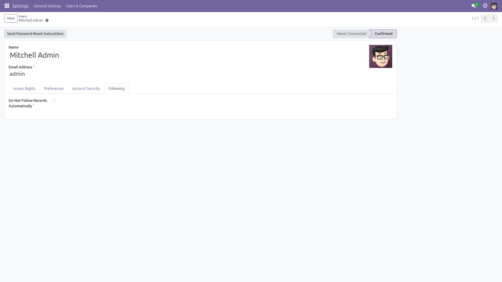

Stop Auto-Following Records
Your inbox, only what you chose.
Odoo subscribes you as a follower of every record you comment on or get assigned, and your Inbox fills with notifications you never asked for — the only escape is unfollowing records one by one, forever. This module adds a single preference that stops automatic following, while the Follow button keeps working whenever you do want updates.
Free and open source (LGPL-3), Odoo 14.0 through 19.0.
- Per user — everyone decides for themselves, in their own preferences.
- Manual Follow still works — clicking Follow yourself always subscribes you.
- Deliberate invitations still work — when a colleague adds you through Add Followers, you are really added, because that invitation email is sent to you either way. The preference suppresses automatic following only.
- Covers assignment too — while the preference is on you are not added as a follower even when someone assigns you work; you stay in control via the Follow button.
- Reversible — untick the preference and automatic following returns.
Screenshots

One preference per user: tick it and Odoo stops subscribing you automatically. The Follow button keeps working as usual.
Installation
- Open Apps, search for Stop Auto-Following Records and click Install.
- Only the standard
mail module is required.
Configuration
- None — the preference appears for every user right after installation.
Usage
- Click your avatar → Preferences (or My Profile).
- Tick Do Not Follow Records Automatically and save.
- You are no longer auto-subscribed when you comment on or are assigned a record.
- Use the Follow button on any record you do want to hear about.
- Note that a colleague can still add you explicitly through Add Followers; the preference only stops Odoo from subscribing you on its own.
Version notes
Identical behavior on every supported series (14.0 – 19.0).
License: LGPL-3 · Source on GitHub · Issues and contributions welcome.